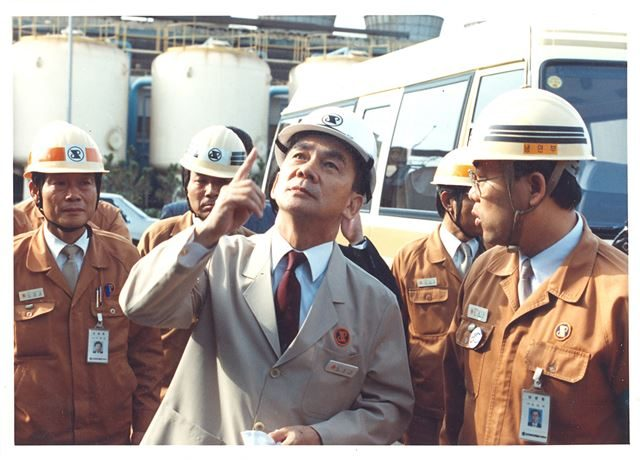
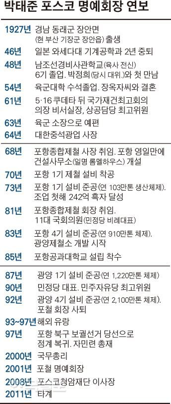

매체 한국일보보도일 2018-04-01
[포스코 50주년] ‘철강왕’ 박태준, 불가능을 녹인 제철보국의 열정
군인서 기업가로
엔지니어 꿈꾸었던 공학도
군복 벗고 기업가의 길 선택
“정치엔 끼지 않는다” 신념
박정희 산업화 동반자로 나서
신념과 불굴의 추진력
선진국서 투자 거부 당하자
대일청구권자금으로 건설 돌입
덩샤오핑 제철소 부탁받은 일본
“박태준 없어서 안된다” 일화도

직원들과 함께 제철소를 돌아보고 있는 박태준(가운데) 전 포스코 명예회장. 포스코 제공오늘날 포스코가 세계적 기업으로 우뚝 서기까지의 역정은 고(故) 박태준 명예회장을 빼놓고 설명할 수 없다. 건물 하나 없던 모래벌판에 제철소를 계획하고, 건설자금을 마련하고, 공사와 철강 제조기술을 습득해 생산량을 비약적으로 늘린 모든 과정에는 박태준의 ‘제철보국(製鐵報國)’ 신념과 불굴의 추진력이 있었다. 1일 50주년을 맞은 포스코가 또 다른 50년을 준비하면서 ‘박태준 정신’을 새삼 되새겨야 할 이유가 여기에 있다.
군인에서 기업가로
박태준은 박정희 전 대통령을 도와 5ㆍ16 쿠데타에 가담했던 이른바 ‘혁명군인’ 출신이지만 정치군인 대신 기업가의 길을 택했다.
부친을 좇아간 일본에서 유년기를 보낸 박태준은 원래 엔지니어를 꿈꾼 공학도였다. 하지만 일본 와세다(早稻田)대 기계공학과 입학 직후 해방을 맞아 돌아온 고국엔 공학도를 맞아줄 산업현장이 전무했다. 고심 끝에 군인의 길을 택한 그는 1948년 남조선경비사관학교(육군사관학교의 전신) 6기 교육 과정에서 ‘일생의 후원자’ 박정희 대위를 만난다. 탄도학 교관이던 박정희는 어려운 문제를 술술 풀어내는 박태준을 눈여겨 봤고 57년 다시 만나 평생을 조국 산업화의 동반자로 지냈다.
“경부고속도로는 내가 직접 감독 할 테니, 종합제철은 임자가 맡아”. 65년 박정희가 청와대에서 박태준에게 건넨 말이 상징하듯, 박정희는 박태준을 무한 신뢰했다. 재임 중 포항제철 현장을 13차례나 방문할 만큼 애정을 보였고, 언제든 대통령을 독대할 특권을 허락했다. 박정희는 이른바 5ㆍ16 ‘거사명단’에서 박태준을 뺐는데, 스스로 달려온 박태준에게 “일이 잘못돼 내가 처형되면 처자식을 맡기려 했다”고 고백하기도 했다.
5ㆍ16 직후 박정희의 비서실장으로, 이어 국가재건최고회의 상공담당 최고위원으로 조국의 경제 현실을 목도한 박태준은 63년 미국 유학을 결심하고 군복을 벗는다. 박정희의 국회의원 출마 권유도, 상공장관 입각 제안도 ‘정치와 생리가 맞지 않는다’는 이유로 거절했다.
그는 박정희와 ‘조국 근대화’라는 명분 아래에서는 한 몸이었지만, 공화당 정치세력과는 철저히 거리를 뒀다. 1969년엔 3선 개헌 지지 성명에 예비역 장성의 서명이 필요하다는 김형욱 중앙정보부장의 요구도 “정치에 끼지 않겠다”며 거절했다. 박정희는 이를 “그 친구 원래 그래. 건드리지 마”라고 웃어넘겼다 한다.
무사와 애국심
황경로 포스코 2대 회장은 “박태준 리더십의 근간은 청렴결백이었다”고 말했다. 실제 그에 대한 많은 평가의 공통분모는 개인보다 국가를 우선시한 ‘사심 없음(無私)’과 애국심이다.
박태준의 도덕적 결벽을 전하는 일화가 많다. 58년 25사단 참모장 시절, 부대 김장 작업에서 톱밥을 물들인 고춧가루 사용 현장을 적발한 그는 뒷돈으로 무마하려는 군납업자를 권총을 들이대며 내친다. 그때 진짜 고춧가루를 구하는 과정에 만난 정직한 군납업자(정두화)에게 큰 은혜도 입는다. 그는 사적으로 지프를 쓸 수 없고, 통금을 지켜야 한다는 이유로 폐렴을 앓던 첫 딸을 제때 병원에 데려가지 못해 잃었다. 둘째 딸도 한때 폐렴 증세로 사경을 헤맸으나 마찬가지 이유로 버텼는데, 근처에서 소식을 들은 정두화가 트럭을 몰고 달려와 병원으로 싣고 갔다고 한다.
1970년 포항 1기 제철설비 건설이 한창일 땐 설비구매 과정에 갖은 이권을 노린 청탁압박이 심했다. 그는 박정희를 독대해 이를 알렸고, 구매원칙을 정리한 메모지에 박정희가 서명해 준 이른바 ‘종이마패’를 평생 품에 간직하고 다녔다. 그는 창업자이면서도 포스코 주식을 한 주도 받지 않은 거로 유명하다.
그의 애국심은 평생을 관통한 강력한 경쟁력이었다. ‘우향우’ 일화가 대표적이다. 포항에 제철소 첫 삽을 뜨던 즈음, 박태준은 사원들에게 “조상의 혈세(대일청구권자금)로 짓는 제철소 건설에 실패하면 모두 우향우해서 영일만 바다에 빠져 죽어야 한다”고 독려했다.
그는 부실을 곧잘 ‘반역행위’에 비유했다. 제철 공장의 기초가 되는 파일박기 공사에서 부실을 발견한 그는 작업자의 머리를 지휘봉으로 내려치며 “저런 파일로 지은 공장에서 쇳물이 엎질러지면 동료가 타 죽는다. 부실공사는 곧 적대행위다”고 호통쳤다. 그는 군인 출신답게 “현장에 나오면 나는 사장이 아니라 소대장이다. 전쟁터의 소대장에겐 인격이 없다”고 강조했다.

박태준 없는 포철은 없다
무에서 유를 창조하는 숱한 고비마다 그는 비상한 경영능력을 발휘했다. 65년 만년 적자에 허덕이던 최대 공기업(대한중석)을 사장 취임 후 1년 만에 흑자로 전환시킨 건 비리와 비효율이란 문제점을 정확히 진단한 결과였다.
포철은 1960년대 초반 구상되고도 건설자금이 없어 10년 가까이 착공이 지연됐다. 미국, 영국 등 선진 5개국 철강사 컨소시엄이 최빈국 한국의 철강산업 육성안을 믿지 않았기 때문이다. 당시 “한국에 제철소를 지으면 투자금을 날릴 것”이란 세계은행(IBRD) 보고서를 이유로 선진국들의 차관도 미뤄졌다. 박태준은 미국에서 자금요청을 거절당하고 귀국길 하와이에서 당시 대일청구권자금을 포철 건설자금으로 전용하는 아이디어(포스코에선 이를 ‘하와이 구상’이라 부른다)를 떠올리고, 수년의 물밑작업 끝에 결국 성사시킨다.
73년 포항 2기 설비 확장 계획이 한창이던 때, 김대중 납치사건으로 일본은 한국에 대한 경협을 전면 보류한다. 1차 오일쇼크에 더한 이중고였다. 일본으로부터의 장비 공급이 막히자 박태준은 무작정 유럽으로 날아가 유럽 업체들을 대상으로 국제 경쟁입찰을 유도한다. 결국 일본은 포철에만큼은 경협 중단 예외를 선언하고 입찰에 달려들었고 2기 설비는 일본, 오스트리아, 독일에서 합리적 가격으로 구매하게 됐다.
이런 박태준의 경영능력은 포철 신화의 중요 요소로 전 세계에 각인됐다. 78년 중국의 덩샤오핑(鄧小平)이 일본을 방문해 “중국에도 포철 같은 제철소를 지어달라”고 부탁하자 이나야마 요시로 (稻山嘉寬) 당시 신일본제철 회장은 “박태준이 없어 안 된다”고 답했다. 1960년대 한국 제철에 부정적 진단을 내려 원조를 막았던 IBRD의 존 자페 박사는 86년 박태준을 다시 만난 자리에서 “당시 내 보고서는 정확했지만, 당신이 상식을 초월하는 바람에 내 보고서가 엉망이 됐다”고 말했다고 한다.
박태준은 타계 직전인 2011년 9월 창업 초기 옛 동료들과 만나 이런 당부를 남겼다. “포스코의 종잣돈이 대일청구권자금이었다는 사실을 명심해야 고도의 윤리성이 나옵니다. 포스코와 조국 근대화의 역사 속에 우리 피땀이 별처럼 반짝이고 있다는 사실을 인생의 자부심과 긍지로 간직합시다.”
김용식 기자 jawohl@hankookilbo.com